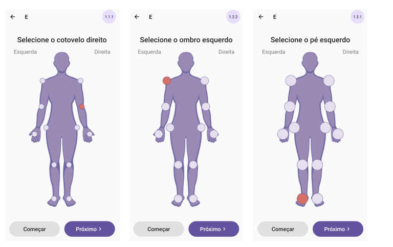

UI RECOMMENDATIONS FOR PEOPLE WITH RHEUMATIC CONDITIONS
UI DESIGN PATTERNS FOR PEOPLE WITH RHEUMATIC CONDITIONS
2021—2022 / UX RESEARCH

Role
UX researcher
Duration
9 months, 2021—2022
Purpose
Master's dissertation in
Fraunhofer Portugal AICOS
Self-report user interface design patterns for people with rheumatic conditions
Self-report user interface design patterns for people with rheumatic conditions was created as a master's dissertation in Fraunhofer Portugal AICOS. The dissertation was done in the context of the Master in Design and Multimedia, advised by Paula Alexandra Silva and Francisco Nunes and presented to the Department of Informatics Engineering of the Faculty of Sciences and Technology of the University of Coimbra.
Problem scope
Existing self-report apps for people with rheumatic conditions are not designed with these people's characteristics in mind.
Motivation
Rheumatic conditions require regular follow-ups with clinicians and patients must engage in self-care for a long period of time. This self-care can be done with the help of self-report apps.
Objectives
Uncover UI components used in existing self-report mobile apps and create evidence-based design patterns for self-report apps for people with rheumatic conditions. The research was divided into three phases: a systematic review of self-report apps, usability experiments with end-users to test the UI components, and the creation of evidence-based design patterns.
PROCESS
Research stages
This work is composed of four phases, with different activities, that result in a specific output that feeds the next phase.
BACKGROUND
Research stages
This research focuses on three of the most common rheumatic conditions, namely Rheumatic Arthritis, Osteoarthritis and Psoratic Arthritis. Even though all three types of rheumatic conditions affect the joints of a person with a rheumatic condition, their causes are distinct. Two of the most prevalent symptoms of these conditions are pain and swelling of the joints. These symptoms influence their dexterity, which has an impact on how they engage with technology. As a result, paying attention to app design is crucial for increasing usability, adherence and therapeutic outcomes. There are some obstacles to overcome to provide apps that meet the expectations of users, such as hand pain and disability, accessibility and technical ability. There are guidelines provided by W3C, Google Material Design and Apple Human Interface Guidelines that must be followed to enable people with these conditions to operate their devices.
Design patterns
Design patterns are standard reference points for the experienced designer. They are reusable
solutions to commonly occurring problems in a context, repeatedly applied to similar problems
encountered in different contexts. Design patterns provide a common language between designers.
Reusing design patterns provides general solutions documented in a format that does not require
specifics tied to a particular problem.
One of the benefits of mobile app design patterns
is helping to eliminate user experience risks since the pattern is tested before, not to need
alternative and uncertain solutions. The other benefit is that that allows predictability. Patterns
provide the user with a feeling of familiarity to enjoy the product without the necessity to waste
time learning how to interact with the app.
SYSTEMATIC MOBILE APP REVIEW
App review results
The aim of the mobile app review and selection is to explore commonly used interfaces in
self-report mobile apps for people with rheumatic conditions. The results of the app review are
divided in: characteristics, features and UI components present in the apps included. The end
output of this phase is to discover and select the UI components that, besides complying with
existing guidelines, are also the most commonly used in commercial mobile apps. The selected UI
components will be included in the usability experiments based on the Android and iOS guidelines
and to detail the validation with experts.
App search was conducted on the two leading mobile app stores: Android Google Play Store, which
caters to Android devices and iOS Apple App Store, which hosts mobile apps for iOS
devices.
Search terms — "arthritis", "ankylosing spondylitis", "rheumatoid arthritis", "psoriatic
arthritis", "osteoarthritis", "osteoporosis", "polymyalgia rheumatic", "systemic lupus
erythematosus", "sjögren", "myositis" and "scleroderma".
A total of 18 apps remained in the final collection for further analysis.
Data collection and analysis
The focus of the analysis was to uncover main UI components used, but the features of the apps
and general app characteristics were also analysed. Analysis was iterative and aligned with the
thematic analysis technique.
This analysis was conducted in Excel and resulted in a table composed of 94 columns, organised
by three domains: assessment measures, codes of the features available and the UI components
present in the apps.
All 18 apps included in the review were installed and used in order to understand their
features, visual characteristics ans flows.
Features of the apps included
The features of the apps were organised, according to the codes: educational information, general
wellbeing monitoring, possibility of triggering self-report, functional capacity monitoring,
quality of life monitoring, exercise management, triggers, medical management, information
sharing, health events, notes/comments and symptom tracking.
Based on the results obtained, it was possible to conclude that most apps lack key features to
assist the self-report of rheumatic conditions such as quality of life, functional capacity and
sharing of the information tracked. Only 4 out of the apps reviewed provided at least 8 features
to support patients in managing their condition: Arthritis+Patient, Elsa, My arthritis and RA
Manager.
One of the goals of this dissertation was to review self-report apps for people with rheumatic
conditions. Therefore the review of symptoms tracking was done in more depth to identify which
symptoms are most commonly tracked.
Features of the apps included
Symptom tracking
Pain
Joint assessment
Fatigue
Education information
Exercise management
Medication management
UI components present in the apps reviewed
In order to understand user interfaces to support self-report we installed the apps and analysed the UI components used in existing self-report apps for people with rheumatic conditions. The table summarises the six UI components used in the features of symptom tracking in the apps reviewed: (i) Body Graphic, (ii) Checkboxes, (iii) Selectors, (iv) Horizontal Sliders and (v) Vertical Sliders and (vi) Circular Sliders.
Examples of UI componets present in the apps included
Horizontal sliders
Vertical sliders
Selectors
Checkboxes
Body graphics
Circular sliders
Validation of UI components through expert review
The validation os the UI components to use in the usability experiments was done through an expert review. In the session conducted, it was concluded that the excluded UI components were checkboxes and circular sliders and the included UI components were horizontal sliders, vertical sliders, column selectors, in-line selectors and the human body. The chosen UI elements were tested in usability experiments in accordance with Android and iOS guidelines and the validation discussed in detail with experts.
USABILITY EXPERIMENTS
General information
The UI components tested were the ones that, besides complying with existing
guidelines, were
also commonly used in commercial mobile apps.
In producing these different alternatives for each UI component, we made sure that our proposals
complied with all relevant Android Material Design 2 and 3 guidelines. Besides understanding the
touch performance of participants with dexterity problems, such as limited hand movement or
touch precision, we aimed to better understand what could make specific UI components more
discoverable or otherwise challenging by examining their characteristics.
The tests were divided into categories:
Category A — horizontal sliders
Category B — vertical sliders
Category C — column selectors
Category D — in-line selectors
Category E — body graphic
Materials, participants and data collection
The UI compoentns were incorporated in an app that was used as a tool to collect data in
usability experiments.
There were 20 participants in the usability experiments, all with rheumatic conditions. The
usability experiments were explaided to the participants, and a set of subjective questions were
asked through the usability experiments.
Data tested and analysed:
.01
Horizontal slides
Considering these recommendations, we decided to test horizontal sliders with the different characteristics that were present in the apps, including: (i) sliders with and without tick marks, (ii) slider showing a static value or a moving one above the slider thumb, (iii) sliders with different slider thumb sizes and (iv) sliders positioned on different positions of the screen.
Test conditions
Slider with different visual characteristics
Different slider thumb sizes
Different positions on screen
Test results
Sliders with a moving value label appear to be the best type of sliders for horizontal sliders. However, tick marks may be added to the slider to align with the subjective preference from participants. Slider position can be at the centre or bottom of the screen, according to what works better. The different slider thumb sizes in horizontal sliders showed no conclusions as to which would be a better option, thus making the recommended slider thumb size adequate.
.02
Vertical slides
Considering these recommendations, we decided to test vertical sliders with the different characteristics that were present in the apps, including: (i) sliders with and without tick marks, (ii) slider showing a static value or a moving one above the slider thumb and (iii) sliders with different slider thumb sizes.
Test conditions
Slider with different visual characteristics

Different slider thumb sizes
Test results
The tests results showed that, sliders with a moving value appears to be the best type of sliders for vertical sliders and the preference of the participants. However, the different positions of vertical sliders on the screen showed no conclusions as to which would be a better option.
.03
Column selectors
Considering these recommendations, we decided to test column selectors with the different characteristics that were present in the apps, including: (i) different spacing and (ii) different sizes.
Test conditions
Size according to guidelines & different spacing

Size 1.25x the recommended guidelines & different spacing
Size 1.5x the recommended guidelines & different spacing
Test results
Therefore, the results show that with the increase of the size there should be a increase of the in-between button spacing. However, the differences observed are small. As a consequence of these results, probably the smaller value would be better in case of space restrictions.
.04
In-line selectors
Considering these recommendations, we decided to test column selectors with the different characteristics that were present in the apps, including: (i) different positions on screen and (ii) different sizes.
Test conditions
Different sizes
Different positions on screen
Test results
As a consequence of these results, any of the in-line selector sizes would be appropriate for the users. Probably the smaller value would be better in case of space restrictions. Accordingly, the different positions of in-line selectors on the screen showed no difference in performance or in participants' preferences.
.05
Body graphic
Considering these body graphics presented in the apps reviewed, we decided to test body graphics with the different characteristics that were present in the apps, including: (i) different size selectors.
Test conditions
Different selectors size
Test results
As shown by the results of the tests, the body graphic with selectors with a size 2x larger than recommended would be the most indicated choice based on the performance of the test and participants’ preferences.
DESIGN PATTERNS
Goals & contributions
Our research aimed to further the design and validation of self-report user interfaces for people with
rheumatic conditions. In this context, our intention is that the patterns, presented in this section,
provide guidance regarding (i) the most adequate slider elements characteristics of horizontal and
vertical sliders and (ii) selector size for a body graphic. For that, we created a set of three design
patterns.
The primary goal of the patterns is to describe our findings in an easily understandable and accessible
format, so that all practitioners working on smartphone interfaces for people with rheumatic conditions
could benefit from the findings of our research in the form of design guidelines. Thus, we hope to
contribute to improving the usability of smartphone user interfaces designed for people with rheumatic
conditions in the future.
.01
RECOMMENDED SLIDER CHARACTERISTICS FOR SLIDERS *
...you've reached the point in the project where you must make decisions about the appropriate slider
characteristics for sliders. The sliders' properties are significant since they will affect whether
users may observe and pick a value (or range) from the slider, as well as perform relevant actions
and activities along with the flow of your UI.
+++
Selecting a slider with the most appropriate characteristics for a specific group of
users required a thorough study of their unique characteristics, expecta- tions and preferences. For
certain populations such as those with rheumatic conditions, official UI guidelines such as Google
Material Design and Apple iOS Human Interface Guidelines do not provide recommendations in picking a
specific element group of characteristics for sliders. Value labels and tick marks are optional,
according to the official guidelines (Google, 2014).
To create a more comfortable and enjoyable user experience, sliders should be designed to match the
special demands of people with rheumatic conditions. Since, patients with rheumatic diseases have
hand discomfort and disability, which limits how mobile devices can be utilised, for example, by
making data input difficult or requiring coarse precision (Mollard and Michaud, 2019).
Previous research has explored the effects of sliders affects the offset errors when users input
data (Colley et al., 2019) and (Zaina et al., 2022) found that sliders with continuous control can
have a harmful effect as, often, it becomes difficult to select a specific value in a large
interval.
Accordingly, our own work revealed that participants were quicker with sliders with a moving value
label. For this type of slider characteristic, participants' mean task completion time was 41%
faster than with sliders with tick marks and 10% faster than with sliders a static value label.
Additionally, our research also studied the performance of sliders with tick marks. The results
showed that the value label is necessary, nonetheless, the use of tick marks assists the user,
therefore, this characteristic can also be included when designing sliders for people with rheumatic
conditions. Regarding the position of the slider on the screen, our research found that position was
not a determinant factor of performance, thus, making the position of the slider an option for the
designer/developer. Furthermore, the recommended slider thumb size of the slider (20dp) was revealed
to be sufficient for users with rheumatic conditions.
Therefore...
For sliders that require a high level of efficiency, sliders should be designed with a moving value label. The incorporation of tick marks and the position of the slider on the screen are optional and a slider thumb size as recommended by official guidelines is adequate.
.02
RECOMMENDED SELECTORS *
...you are now in a phase of the project where decisions need to be made regarding adequate size for
selectors. Choosing selectors' size is an important decision as it will determine the levels of
comfort, and efficiency with which your users are able to complete necessary actions and tasks
throughout the flow of your UI.
+++
Choosing a selector's size for a given group of users requires a thorough understanding
of their particular characteristics, expectations, and preferences. Official UI guidelines such as
Google Material Design and Apple iOS Human Interface Guidelines do not provide guidance in choosing
a selector's size for specific groups such as people with rheumatic conditions. Although W3C
provides a succession criteria on target sizes being large enough for users to easily activate them,
this criteria does not recommend a specific target size for people with rheumatic
conditions.
Previous research has explored the use of large icons and buttons to improve accessibility for users
with dexterity impairments (Parmanto and Brad, 2019) and (Yu et al., 2017) found that users with a
higher degree of dexterity impairment demonstrated more problems in task completion and prefer the
use of larger buttons. Consequently, most guidelines that are currently available do not aid
designers in creating smartphone UIs that adequately respond to people with rheumatic conditions
specific characteristics.
It is known that the severity of hand impairment, dexterity, movement control, hand coordination,
and limited hand mobility increases as rheumatic diseases worsen citepMollard2021. These conditions
can have a significant impact on movement, resulting in symptoms like pain, stiffness, rigidity and
sluggish movement (Mollard and Michaud, 2019). Selectors are therefore more difficult to select when
their size is reduced.
Inevitably, accurately acquiring small targets becomes increasingly difficult as the conditions
progress. Providing targets that are too small makes a UI more difficult to use and could result in
frustration and anxiety among people with rheumatic conditions (Czaja and Sharit, 1998) and should
therefore be avoided.
Furthermore, our own research revealed that people with rheumatic conditions took less time to
select an option in 56dp size column selectors when these had an in-between button spacing of 24dp,
where the registered mean completion times of this in-between target was 1.88 seconds.
Accordingly, our own research revealed that for larger in-between buttons spacing there is a
significance for larger dimensions of selectors (1.25x larger than recommended - 70dp). However,
since this significance is very low, which indi- cates this dimension is not crucial for bettering
user performance. Additionally, the size recommended by the official guidelines does not behave very
differently from a larger size, therefore, the size recommended by the official guidelines for
selectors can be used. Thus, ideally, a selector's size should be larger than the recommended by
official guidelines, nonetheless, the recommenced size also works for people with rheumatic
conditions. Additionally, in-line selectors were also studied, so we can say that regardless of
whether the selectors are in a row or in a column, the recommendations are the same.
Additionally, our own research revealed that people with rheumatic conditions took less time to
select an option in column selectors with the official guidelines recommended size (56dp) when these
had an in-between button spacing of 24dp (2x larger than the recommended by official guidelines),
where the registered mean task completion time of this in-between target was 1.88 seconds.
Additionally, our research showed that, even without significance, ideally, as selectors' sizes
increase, so should the in-between button spacing.
The results show that with the increase of the size there should be a increase of the in-between
button spacing. However, the differences observed are small. Additionally, even without
significance, ideally, as selectors' sizes increase, so should the in-between button spacing,
however, probably the smaller in-between button spacing works in case of space restrictions.
Therefore...
For people with rheumatic conditions, selectors' size should be 1.5x larger than recommended (70dp) with an in-between button spacing 2x larger than recommended (24dp). Otherwise, the size and in-between button spacing recommended by the official guidelines - size (56dp) and in-between button spacing (12dp) - also should work.
.03
RECOMMENDED SELECTORS *
...you are now in a phase of the project where decisions need to be made regarding adequate selector
size for a body graphic. Choosing a selector's size for a body graphic is an important decision as
it will determine the levels of self-report quality, accuracy and comfort with which your users are
able to get things done on your interface.
+++
As a result of the increase in rheumatic diseases in today's society, sensory and
psychomotor abilities deteriorate and these changes may make selector sizes for a body graphic
obsolete. Furthermore, present smartphone user interface guidelines do not address specialized
groups, such as persons with rheumatic diseases.
Previous research has explored the use of large icons and buttons to improve accessibility for users
with dexterity impairments (Parmanto and Brad, 2019) and (Yu et al., 2017) found that users with a
higher degree of dexterity impairment demonstrated more problems in task completion and prefer the
use of larger buttons. Consequently, most guidelines that are currently available do not aid
designers in creating smartphone UIs that adequately respond to people with rheumatic conditions
specific characteristics.
People with rheumatic conditions have dexterity problems caused by swollen joints, hand pain, or
deformation of the fingers. Many self-monitoring appli- cations for rheumatic conditions focus on
what are known as PROs (patient- reported outcomes) (Mollard and Michaud, 2021). The tracking of
symptoms, such as the assessment of the joints, is one of the main features of these apps (Yuqing
and Hong, 2021). Usually, apps that use body graphics with selectors to assess joints present an
overview of the human body with the possibility of selecting different joints.
Official UI guidelines such as Google Material Design and Apple iOS Human Interface Guidelines do
not provide guidance in choosing a size for the selectors in the body graphics for specific groups
such as people with rheumatic con- ditions. Official smartphone Android Material Design guidelines
recommend minimum toggle buttons to be 24dp, raising issues such as selector occlusion while
performing a gesture and/or accidentally touching a neighbouring selector.
Additionally, people with rheumatic conditions have limited movement control, hand coordination, and
hand movement (Grainger and Al, 2020), which affects their precision and the way they interact with
smartphones.
Accordingly, our own research revealed that people with rheumatic conditions took less time to
select the right part of the body graphic when these had a selector size of 48dp, where the
registered mean task completion times of this size selectors were 2.35 seconds. Participants were
70% faster in comparison with a body graphic with selectors with the recommended.
Therefore...
For people with rheumatic conditions performing tasks that require high- performance measures in a body graphic, design selectors with a size of 56dp (2x the recommended by official guidelines).
THE TAKEAWAY
Conclusion
This work researched what adaptations are required in order to design self-report applications for people
with rheumatic conditions, providing interfaces that people with these conditions will be able to use.
The research was done in the scope of a project of Fraunhofer Portugal AICOS, a project that intends to
create a mobile solution that enables holistic and efficient patient monitoring, for clinical care and
drug trials.
Our research revealed that current smartphone UI components are not immediately usable by people with
rheumatic conditions. However, in many cases, the official recommendations about the UI components are
compatible and adequate for people with rheumatic conditions, as is the case of the slider thumb size in
horizontal and vertical sliders e the in-line selector sizes.
THANK YOU FOR LOOKING!
SEE OTHER PROJECTS >